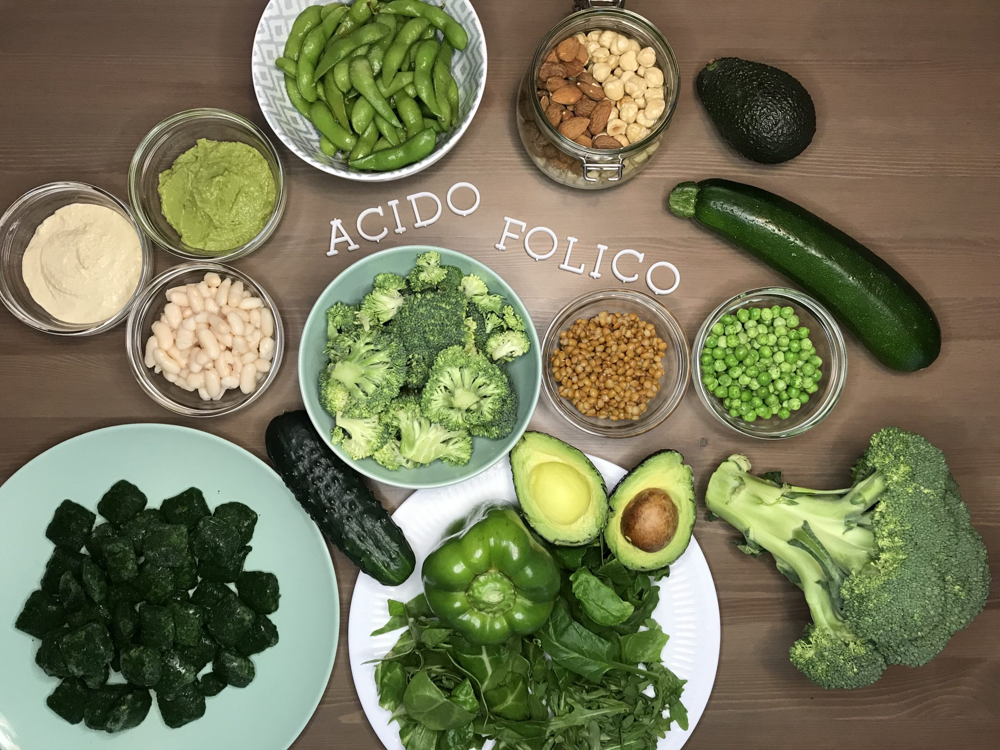
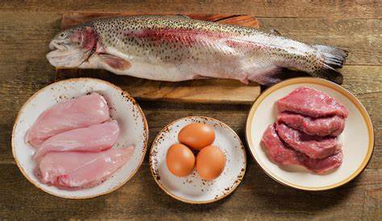

- El primer trimestre es una etapa clave para el desarrollo del bebé. Aunque aún no se note por fuera, dentro del cuerpo ya se están formando los órganos, el sistema nervioso y la placenta. Por eso, la alimentación debe ser equilibrada, segura y adaptada a los cambios que se viven en estas semanas.

✅ 1. Alimentación recomendada
- Frutas y verduras frescas
Son fuente de vitaminas y fibra. Las de color verde oscuro, como la espinaca o el brócoli, ayudan a prevenir malformaciones en el bebé. - Cereales y tubérculos
Avena, arroz integral, papa o camote dan energía y mejoran la digestión. - Proteínas bien cocidas
El pollo, los huevos, las menestras y los pescados cocidos ayudan a formar los órganos y tejidos del bebé. - Lácteos pasteurizados
Leche, yogur y queso fresco aportan calcio, necesario para fortalecer los huesos y dientes del bebé y de la mamá. - Grasas saludables
La palta, el aceite de oliva y las semillas como la chía apoyan el desarrollo del cerebro y del sistema nervioso del bebé.

🚫 2. Alimentos a evitar
- Carne, huevo o pescado crudo o poco cocido
Pueden contener bacterias o parásitos, que pueden provocar infecciones o abortos. - Alcohol
Afecta directamente el desarrollo del bebé, especialmente del cerebro y los órganos - Comida chatarra o muy azucarada.
No aporta nutrientes y puede provocar aumento de peso o problemas en la salud. - Demasiada cafeína.
Exceder el consumo puede afectar el ritmo cardíaco del bebé.
💊 3. Suplementos necesarios
- Ácido fólico (vitamina B9): Previene malformaciones del cerebro y columna del bebé. Dosis común: 400 microgramos diarios (5 mg si hay antecedentes de riesgo).
- Yodo: Ayuda al desarrollo del cerebro y las hormonas del bebé. Dosis recomendada: 200 microgramos diarios si no consumes sal yodada o lácteos.
- Hierro: Necesario solo si tienes anemia o estás en riesgo. Previene partos prematuros y bajo peso del bebé. Se absorbe mejor con alimentos ricos en vitamina C (como jugo de naranja).
📌 4. Recomendaciones generales
- Evita tomar medicamentos por tu cuenta, solo toma lo que indique el médico.
- Lava bien frutas y verduras antes de consumirlas, incluso si están peladas.
- Evita ayunos prolongados, sobre todo si tienes náuseas. Come algo liviano al despertar.
- Descansa lo necesario, dormir bien ayuda a tu cuerpo a adaptarse a los cambios del embarazo.